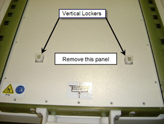
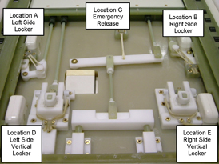

Illustration 1: ACCESS PANEL REMOVAL

| NOTE: | Once the access panel is removed you will see 5 mechanisms that utilize the bungee tubing for its operation. Each mechanism has two bungee tubes applied to provide redundancy in the event of a tubing failure. See Illustration 2 for mechanism location and identification. |
Illustration 2: MECHANISM AND BUNGEE LOCATION
